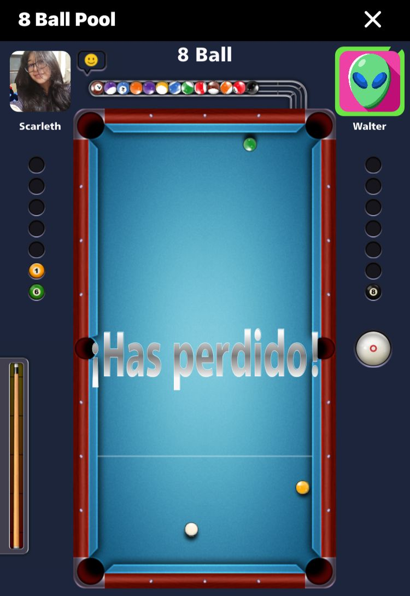
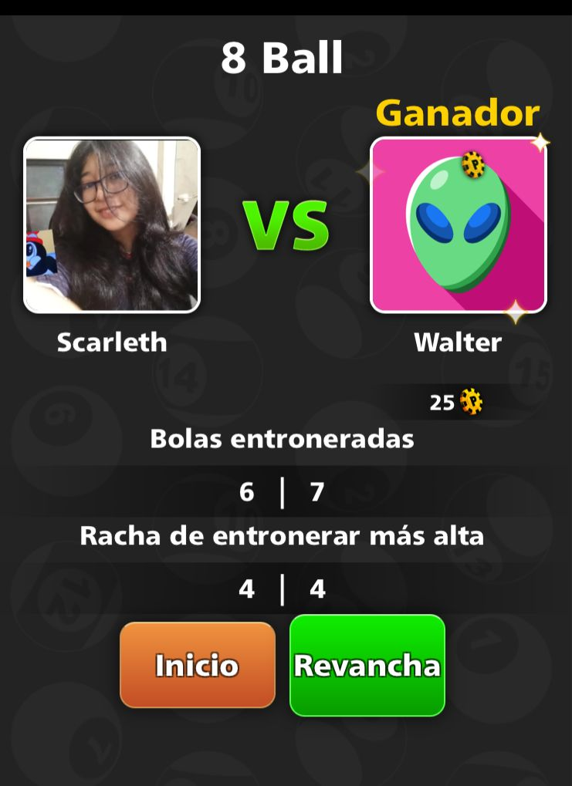

ERA INFINITA
DEPORTES
EL CAMPEÓN CONSERVA EL DOMINIO EN LA MESA VERDE
Crónica oficial del torneo interno que mantiene en expectativa a la retadora.
Instante decisivo durante el enfrentamiento oficial.
En una nueva jornada del campeonato interno, el actual líder reafirmó su posición con una actuación sólida y estratégica. Desde el primer tiro, la confianza fue evidente.
La retadora mostró determinación y espíritu competitivo, manteniendo el ritmo durante gran parte del encuentro. Sin embargo, la experiencia terminó inclinando el marcador.
Fuentes cercanas aseguran que más allá del resultado, cada partida fortalece la complicidad entre ambos competidores.
Registro Oficial
- Victorias del campeón: 23
- Victorias de la retadora: 4
- Partidas disputadas: 27
- Revancha pendiente: Confirmada

Ha perdido la retadora.

La mejor jugada del campeon.